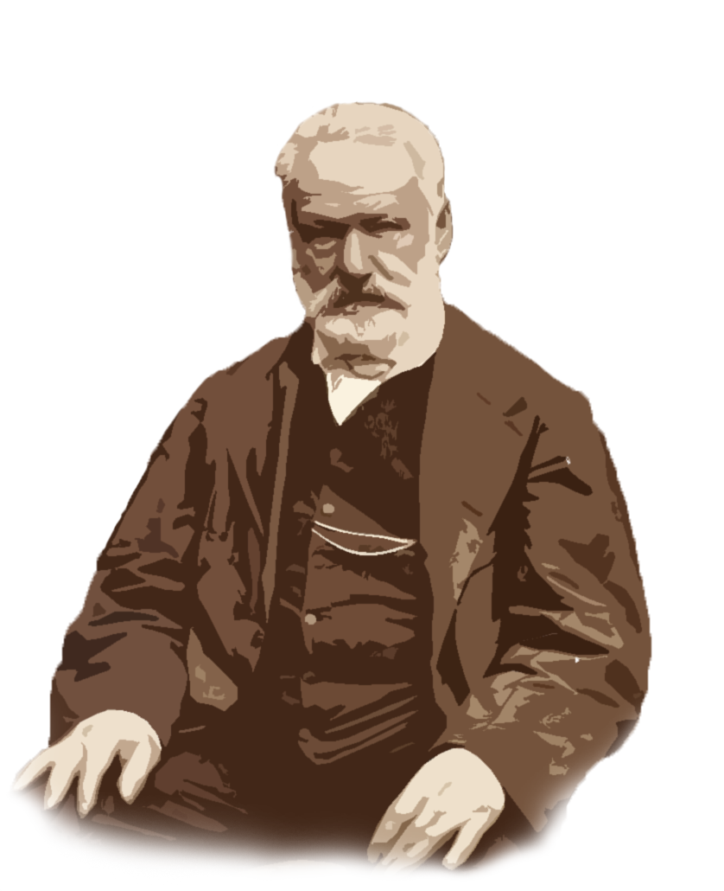

BIENVENUE
Générateur de citations de grands auteurs
Oscar Wilde et Victor Hugo

Choisissez l'auteur des citations
Victor Hugo
Oscar Wilde
Choisissez le nombre de citations
à generer
Maximum 5 citations
Générer
Réinitialiser